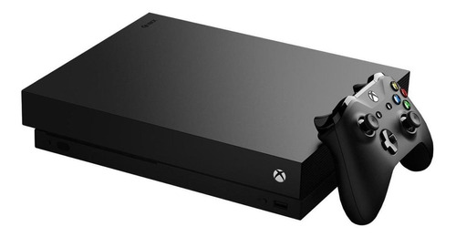
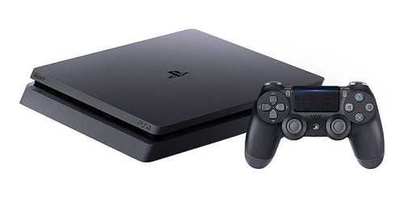

1-PlayStation 5 a melhor experiência PlayStation
Descrição do console PlayStation 5
O PlayStation 5 representa o auge dos jogos de nova geração, porque oferece uma jogabilidade sólida de 4K a 60fps, ou até 120fps com uma TV compatível. Além disso, proporciona tempos de carregamento extremamente rápidos, graças à inclusão de um SSD personalizado.

2-Consoles de Vídeo Games Xbox One X
Descrição de Xbox One X
Microsoft nos deu o melhor hardware no Xbox One X, um dos melhores Consoles de Vídeo Games. Ele oferece a mesma reprodução de vídeo 4K Blu-ray e HDR do Xbox One S, ao mesmo tempo que traz aquele aprimoramento visual para os jogos. A Microsoft não estava exagerando quando nos disse que o Xbox One X é o console de jogos doméstico mais poderoso já vendido, pelo menos até o lançamento do PS5 e do Xbox Series X.

3-Consoles de Vídeo Games PlayStation 4
Descrição do console de vídeo game PlayStation 4
O PlayStation 4 Pro possui excelente hardware com uma fantástica biblioteca de jogos para combinar, e seu controlador DualShock 4 redesenhado é uma atualização muito necessária em relação às versões anteriores do gamepad da Sony.
